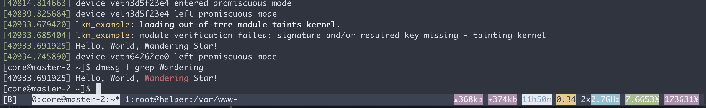
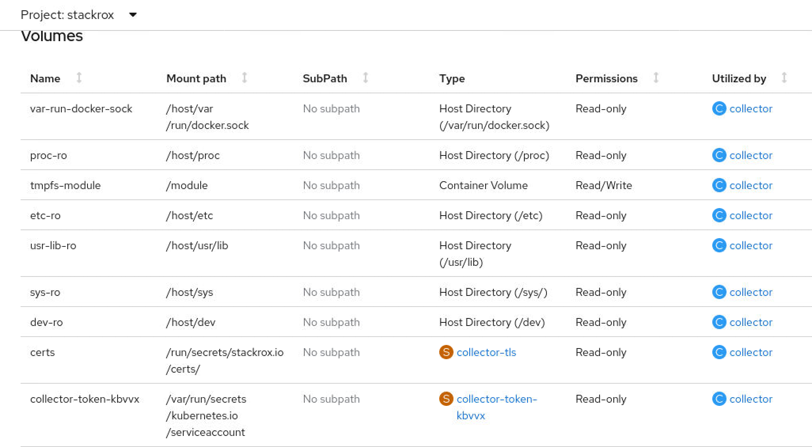

从容器向宿主机注入内核模块 kmod / driver
从容器向宿主机注入kmod/driver，最大的场景，就是在容器平台上给GPU和DPU装驱动，参考nvidia家的gpu驱动(nvidia gpu operator)，都是从容器向宿主机注入的方式做的。
还有一个大的使用场景，就是像RHACS/StackRox这种安全平台，向宿主机注入内核模块，进行系统监控。
视频讲解:
先用podman进行单机版本测试
# on a centos8 to test the driver build
# https://blog.sourcerer.io/writing-a-simple-linux-kernel-module-d9dc3762c234
yum install -y epel-release
yum update -y
yum install -y byobu podman buildah
mkdir -p /data/kmod
cd /data/kmod
podman run -it --rm quay.io/generic/centos8 bash
# below will input/run in the container
dnf update -y
dnf install -y make gcc wget perl createrepo kernel-core-$(uname -r) kernel-devel-$(uname -r) pciutils python36-devel ethtool lsof elfutils-libelf-devel rpm-build kernel-rpm-macros python36 tk numactl-libs libmnl tcl binutils kmod procps git autoconf automake libtool hostname
mkdir -p ~/src/lkm_example
cd ~/src/lkm_example
cat << 'EOF' > lkm_example.c
#include <linux/init.h>
#include <linux/module.h>
#include <linux/kernel.h>
MODULE_LICENSE("GPL");
MODULE_AUTHOR("Wandering Star");
MODULE_DESCRIPTION("A simple example Linux module.");
MODULE_VERSION("0.01");
static int __init lkm_example_init(void) {
printk(KERN_INFO "Hello, World, Wandering Star!\n");
return 0;
}
static void __exit lkm_example_exit(void) {
printk(KERN_INFO "Goodbye, World, Wandering Star!\n");
}
module_init(lkm_example_init);
module_exit(lkm_example_exit);
EOF
cat << EOF > Makefile
obj-m += lkm_example.o
all:
make -C /lib/modules/$(uname -r)/build M=$(pwd) modules
clean:
make -C/lib/modules/$(uname -r)/build M=$(pwd) clean
EOF
sed -i 's/^ /\t/g' Makefile
make
insmod lkm_example.ko
# insmod: ERROR: could not insert module lkm_example.ko: Operation not permitted
# poc again with priviledged
podman run -it --rm --privileged quay.io/generic/centos8 bash
# do the same above again
# yum install ..............
# ........
# make
insmod lkm_example.ko
# go to host
dmesg | grep Wandering
# [ 5197.673179] Hello, World, Wandering Star!
lsmod | grep example
# lkm_example 16384 0try the demo on openshift4
first, we try to get rpm repo offline
- https://www.openshift.com/blog/how-to-use-entitled-image-builds-to-build-drivercontainers-with-ubi-on-openshift
# on a vultr host, centos7
mkdir -p /data/rhel8/entitle
cd /data/rhel8/entitle
# goto https://access.redhat.com/management/subscriptions
# search employee sku, find a system, go into, and download from subscription
# or goto: https://access.redhat.com/management/systems/4d1e4cc0-2c99-4431-99ce-2f589a24ea11/subscriptions
yum install -y unzip
unzip *
unzip consumer_export.zip
find . -name *.pem -exec cp {} ./ \;
# podman run -ti --mount type=bind,source=/data/rhel8/entitle/$(ls *.pem | sed -n '2p'),target=/etc/pki/entitlement/entitlement.pem --mount type=bind,source=/data/rhel8/entitle/$(ls *.pem | sed -n '2p'),target=/etc/pki/entitlement/entitlement-key.pem registry.access.redhat.com/ubi8:latest bash -c "dnf search kernel-devel --showduplicates"
mkdir -p /data/rhel8/dnf
podman run -it --rm -v /data/rhel8/dnf:/data/dnf:z \
--mount type=bind,source=$(ls /data/rhel8/entitle/*.pem | sed -n '2p'),target=/etc/pki/entitlement/entitlement.pem \
--mount type=bind,source=$(ls /data/rhel8/entitle/*.pem | sed -n '2p'),target=/etc/pki/entitlement/entitlement-key.pem \
registry.access.redhat.com/ubi8:8.3 bash
cd /data/dnf
# dnf -y --enablerepo=rhel-8-for-x86_64-baseos-rpms --releasever=8.3 install make gcc wget perl createrepo pciutils python36-devel ethtool lsof elfutils-libelf-devel rpm-build kernel-rpm-macros python36 tk numactl-libs libmnl tcl binutils kmod procps git autoconf automake libtool hostname kernel-core-$(uname -r) kernel-devel-$(uname -r)
dnf -y --enablerepo=rhel-8-for-x86_64-baseos-rpms --releasever=8.3 install createrepo
dnf -y download --resolve --alldeps --releasever=8.3 \
make gcc wget perl createrepo pciutils python36-devel ethtool lsof elfutils-libelf-devel rpm-build kernel-rpm-macros python36 tk numactl-libs libmnl tcl binutils kmod procps git autoconf automake libtool hostname kernel-core-4.18.0-240.22.1.el8_3.x86_64 kernel-devel-4.18.0-240.22.1.el8_3.x86_64
dnf -y install https://dl.fedoraproject.org/pub/epel/epel-release-latest-8.noarch.rpm
# dnf install -y https://kojipkgs.fedoraproject.org//packages/modulemd-tools/0.9/1.fc32/noarch/modulemd-tools-0.9-1.fc32.noarch.rpm
# https://copr.fedorainfracloud.org/coprs/frostyx/modulemd-tools/
dnf copr enable -y frostyx/modulemd-tools
dnf install -y modulemd-tools
createrepo ./
repo2module . \
--module-name foo \
--module-stream devel \
--module-version 123 \
--module-context f32
createrepo_mod .
# back to host
cd /data/rhel8
tar zcvf dnf.tgz dnf/
# upload dnf.tgz to helper /var/www/html/
# on helper
cd /var/www/html/
tar zvxf dnf.tgz
we will use an entrypoint file. the entrypoint script file is locate here
# on helper
mkdir -p /data/kmod
cd /data/kmod
cat << EOF > /data/kmod/Dockerfile
FROM registry.access.redhat.com/ubi8
WORKDIR /
COPY kmod.entrypoint.sh /entrypoint.sh
RUN chmod +x /entrypoint.sh
ENTRYPOINT ["/entrypoint.sh"]
EOF
buildah bud -t quay.io/wangzheng422/qimgs:kmod-demo.02 -f Dockerfile .
buildah push quay.io/wangzheng422/qimgs:kmod-demo.02
cd /data/install
cat << EOF > kmod-pod.yaml
apiVersion: v1
kind: Pod
metadata:
name: kmod-example
spec:
nodeSelector:
kubernetes.io/hostname: 'master-2'
restartPolicy: Never
containers:
- securityContext:
privileged: true
image: quay.io/wangzheng422/qimgs:kmod-demo.02
imagePullPolicy: Always
name: kmod-example
EOF
oc create -n demo -f kmod-pod.yaml
# to restore
oc delete -n demo -f kmod-pod.yaml
# login to master-2
ssh core@master-2
lsmod | grep example
# lkm_example 16384 0
dmesg | grep Wandering
# [40933.691925] Hello, World, Wandering Star!
RHACS/Stackrox 使用案例
我们已经完成了内核模块的注入，但是为了更好的实现软件功能，我们一般需要把/sys, /dev这种目录挂载到容器中，以下就是RHACS/StackRox的挂载实例。

others
mkdir /etc/yum.repos.d.bak
mv /etc/yum.repos.d/* /etc/yum.repos.d.bak
cat << EOF > /etc/yum.repos.d/remote.repo
[remote]
name=RHEL-Mirror
baseurl=http://v.redhat.ren:8080/
enabled=1
gpgcheck=0
EOF